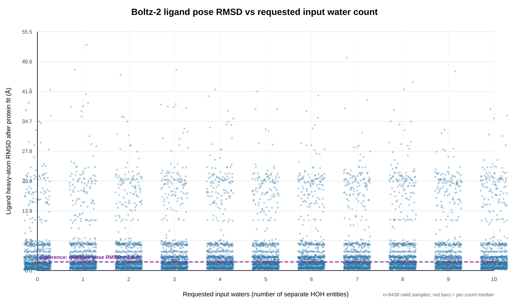
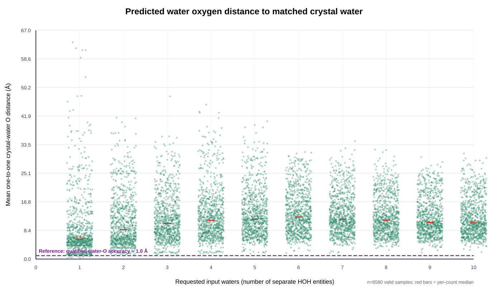

compute-node（8× RTX 5090 32 GB）每个目标只使用用户提供的 RCSB 条目 mmCIF 与官方化学组件 CIF。程序在推理前把结构拆成"蛋白 / 配体 / 水"三类，并把"给模型的输入"与"仅用于打分的信息"严格分开。以 1FIN 为例，提交给 Boltz 的 YAML 只有序列、配体 SMILES 与 N 个 HOH 实体：
| 类别 | 如何识别 | 进入模型输入？ | 用途 |
|---|---|---|---|
| 蛋白链 | 按 _entity_poly.type=polypeptide 取全部不对称单元链的单字母序列（pdbx_seq_one_letter_code_can） | 仅序列（+标准 MSA） | 折叠 |
| 目标配体 | 在结构中匹配目标 CCD 的残基，按 author/label 链、实体、残基号、插入码确定性选唯一副本 | 仅官方 SMILES_CANONICAL（经连通性/键级/电荷/立体校验） | 折叠 |
| 水分子 | 按残基名 HOH/WAT/DOD 分组，每个残基取一个占据最高氧 | 否（不作输入） | 仅推理后定义参考水壳、打分与可视化 |
| 原生坐标 | 晶体蛋白/配体/水坐标 | 否（无坐标、无模板、无口袋约束） | 仅用于受体叠合后的评估 |
不泄漏论证：模型输入不含任何晶体坐标、坐标模板、口袋约束或原生水位点；配体只以 SMILES 给出（与它的晶体位置无关）；水只以 CCD HOH 化学代码给出（几个、位置全凭模型）。原生结构只在推理结束后用于：(i) 定义距原生配体 6 Å 内的参考水壳；(ii) 配体 RMSD；(iii) 配对可视化。因此不存在"把答案喂给模型"的路径。
先用蛋白共同 Cα 原子做 Kabsch 刚体叠合（预测→原生），再对配体匹配原子求对称性感知最小的重原子 RMSD：
报告同时给均值与中位数：均值受少数错误 pose（P90≈16.6 Å）放大，中位数反映"典型"准确度，两者结合判定。
定义两个集合（均在受体叠合后、同一参考坐标系内）：
HOH 氧原子。模型被要求 N 个水则输出 N 个氧（平均 5.50 个/样本）。构造距离矩阵 Dij = ‖pi−nj‖，用匈牙利算法（Kuhn–Munkres / scipy.optimize.linear_sum_assignment）求一对一最优指派——一个预测水最多匹配一个原生水，反之亦然（不允许"一个真实水同时匹配多个预测水"，也不允许"一个预测水同时解释多个真实水"）：
阈值约定：1.5 Å 是"同一水位点"的常用判据（水合位点/结构水比较类工作中的通用容差），1.0 Å 为严格、2.0 Å 为宽松；本报告三档并列，主口径取 2.0 Å。precision 的"阳性"即"预测水氧在 τ 内找到唯一对应的真实水氧"。
来源：Sridhar et al., Rapid and Accurate Prediction and Scoring of Water Molecules in Protein Binding Sites, PLOS ONE 2012（WaterDock；WaterDock 2.0, PLOS ONE 2017）；SuperWater, Communications Chemistry 2025；Wierbowski et al., Cross-docking benchmark, Protein Science 2020；Uni-Mol Docking V2, arXiv 2024。两图均以紫色虚线画出该基线，便于与"合格水平"直接比较。
设计为 30 目标 × 10 个水数量 × 30 重复 = 9000；实得 8580，缺口 420 = 3 目标 × 10 水数量 × 14 重复。
1FIN、2HYY、3CS9（4 链、约 1100 token），它们在 30 重复下峰值约 33.6 GB，超过 32 GB，确定性 OOM。status.requested_samples 与 source_completeness.json 的 job_sample_counts，评估/汇总按各任务自身重复数统计，无静默替换。
| 请求水数 | 有效样本 | 配体 RMSD 均值/中位 (Å) | RMSD<2 Å 占比 | F1 \@1.0 | F1 \@1.5 | F1 \@2.0 | prec \@2.0 | recall \@2.0 | 一对一水氧距离 (Å) |
|---|---|---|---|---|---|---|---|---|---|
| 1 | 858 | 4.53 / 2.03 | 0.494 | 0.003 | 0.014 | 0.019 | 0.113 | 0.011 | 9.31 |
| 2 | 858 | 4.53 / 2.07 | 0.491 | 0.005 | 0.017 | 0.028 | 0.083 | 0.017 | 11.10 |
| 3 | 858 | 4.76 / 2.03 | 0.497 | 0.008 | 0.021 | 0.032 | 0.068 | 0.022 | 11.98 |
| 4 | 858 | 4.72 / 2.00 | 0.501 | 0.006 | 0.021 | 0.033 | 0.057 | 0.026 | 13.08 |
| 5 | 858 | 4.50 / 1.98 | 0.505 | 0.006 | 0.021 | 0.035 | 0.053 | 0.029 | 13.25 |
| 6 | 858 | 4.75 / 2.06 | 0.491 | 0.008 | 0.022 | 0.034 | 0.046 | 0.030 | 13.66 |
| 7 | 858 | 4.71 / 2.03 | 0.493 | 0.008 | 0.023 | 0.034 | 0.043 | 0.031 | 13.13 |
| 8 | 858 | 4.84 / 2.02 | 0.498 | 0.008 | 0.025 | 0.037 | 0.041 | 0.038 | 12.67 |
| 9 | 858 | 4.71 / 1.98 | 0.505 | 0.008 | 0.022 | 0.036 | 0.039 | 0.039 | 12.35 |
| 10 | 858 | 4.70 / 1.98 | 0.505 | 0.008 | 0.022 | 0.036 | 0.036 | 0.040 | 12.19 |
水数量 1→10：配体 RMSD 中位数几乎不变；水氧 F1 仅由 0.019 微升到 0.036，其中 precision 下降、recall 上升——即请求更多水主要"摊薄"precision，而非找到更多真实水位点。

| 目标 | 样本 | RMSD 均值 (Å) | RMSD 中位 (Å) | RMSD<2 Å 占比 |
|---|---|---|---|---|
| 11ES | 300 | 0.77 | 0.73 | 1.000 |
| 12EW | 300 | 2.73 | 2.50 | 0.180 |
| 36CA | 300 | 20.94 | 21.11 | 0.000 |
| 31LQ | 300 | 3.16 | 3.16 | 0.000 |
| 1IEP | 300 | 13.42 | 13.70 | 0.000 |
| 1M17 | 300 | 4.39 | 4.39 | 0.000 |
| 2HYY * | 160 | 22.15 | 20.29 | 0.000 |
| 3CS9 * | 160 | 21.45 | 20.36 | 0.000 |
| 2ITY | 300 | 1.54 | 1.54 | 0.993 |
| 2ITN | 300 | 1.96 | 1.91 | 0.573 |
| 2ITO | 300 | 0.85 | 0.82 | 1.000 |
| 2ITP | 300 | 1.20 | 1.22 | 0.997 |
| 2ITQ | 300 | 0.55 | 0.56 | 1.000 |
| 2ITT | 300 | 1.42 | 1.44 | 1.000 |
| 2ITU | 300 | 3.05 | 3.05 | 0.000 |
| 2ITV | 300 | 1.69 | 1.62 | 0.857 |
| 2ITW | 300 | 3.16 | 3.11 | 0.000 |
| 2ITX | 300 | 1.97 | 1.95 | 0.567 |
| 2ITZ | 300 | 0.88 | 0.82 | 0.997 |
| 4X0M | 300 | 0.40 | 0.37 | 0.990 |
| 4X2F | 300 | 4.21 | 5.95 | 0.190 |
| 4X2G | 300 | 0.66 | 0.60 | 0.990 |
| 4X2J | 300 | 2.16 | 0.53 | 0.547 |
| 4X2K | 300 | 3.48 | 6.17 | 0.480 |
| 1YWN | 300 | 1.84 | 1.84 | 0.997 |
| 1FIN * | 160 | 20.13 | 17.45 | 0.000 |
| 4AGD | 300 | 1.84 | 1.88 | 0.610 |
| 10OT | 300 | 5.69 | 5.84 | 0.000 |
| 28JH | 300 | 12.96 | 7.10 | 0.000 |
| 30GX | 300 | 2.75 | 2.84 | 0.270 |
*4 链大复合物，受 32 GB 显存限制以 16 重复运行（样本数 160）。
下表把"全部 30 目标"与"剔除 3 个多链大目标（1FIN/2HYY/3CS9）"以及"仅保留构象正确样本（配体 RMSD<2 Å）"对比，直接检验两个主图结论的稳健性。
| 数据集 | 样本 | RMSD 均值 (Å) | RMSD 中位 (Å) | RMSD<2 Å | 水氧 F1\@2.0（1/5/10 水） | 一对一距离（1/5/10 水） |
|---|---|---|---|---|---|---|
| 全部 30 目标 | 8580 | 4.67 | 2.01 | 0.498 | 0.019 / 0.035 / 0.036 | 9.31 / 13.25 / 12.19 |
| 剔除 3 个多链目标 | 8100 | 3.69 | 1.89 | 0.527 | 0.021 / 0.037 / 0.038 | 8.38 / 12.41 / 11.56 |
| 仅 RMSD<2 Å 样本 | 4271 | 1.09 | 1.10 | 1.000 | 0.010 / 0.031 / 0.029 | 7.29 / 11.51 / 10.57 |
--subsample_msa、--num_subsampled_msa 1024）处理；同一目标不同水数量共享同一 MSA，仅 HOH 实体数目不同。运行 production 产物位于服务器 /path/to/boltz-water-benchmark/，同步到本地 results/water-gradient-benchmark/：
deliverables/production/：summary_by_water_count.csv、summary_by_target_water.csv、scatter_coordinates.csv、ligand_rmsd_scatter.svg、water_position_scatter.svg、source_completeness.json、release_manifest.json、paired_reference_boltz_pdbs.zip（8580 配对 PDB）、source_data_and_metrics.zip。metrics/production/：sample_metrics.csv（逐样本 8580 行）、evaluation_summary.json。provenance/：manifest.json、prepared_manifest.json、run_config.json、run_summary.json。配对 PDB 布局（单模型）：参考用大写链（蛋白 A,B,..、配体 L、晶体水 N），Boltz 预测用小写链（蛋白 a,b,..、配体 l、输入水 n）；预测已按蛋白 Cα 叠合到参考坐标系，故打开即叠加。只看 Boltz 预测：隐藏大写链（PyMOL hide chain A 或 show cartoon, chain a）。
| 归档 | SHA-256 |
|---|---|
| paired_reference_boltz_pdbs.zip | 26e15b0f15bbea4f92185c714b9c7a7502ce43b56662b148ed10807f0f5cb2c8 |
| source_data_and_metrics.zip | aab9ff5e338d6730ecdfadcda8058e432b6038d1ae32cb5c0997cfb820067573 |
发布清单自检：design_complete = true，release_complete = true，300/300 任务在册，8580 行指标全部 ok，缺失/失败/路径不一致均为 0。
服务器 boltz 环境：code/prepare.py → 生产 code/run_grid.py（或续跑 code/run_retry.py）→ 评估 code/evaluate.py → 汇总 code/summarize.py。关键设置：--model boltz2 --diffusion_samples 30 --max_parallel_samples 1 --seed SEED_BASE+target*1000+water --use_msa_server；3 个大目标改用 --diffusion_samples 16。评估/汇总按各任务自身记录的样本数工作。